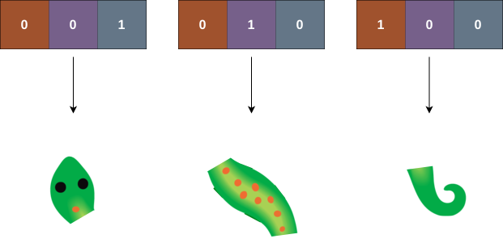
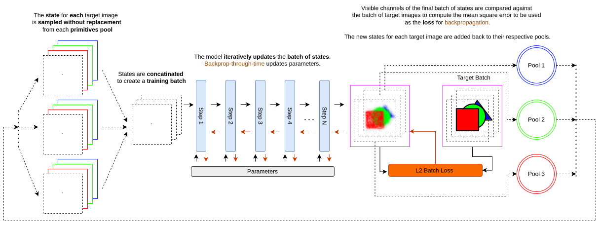

1 · Motivation
Biological development is a remarkable example of a system where identical local rules—encoded in the genome shared by every cell—give rise to globally coherent, spatially heterogeneous structures. A liver cell and a neuron carry the same DNA; it is the expression state of that DNA, shaped by developmental history and local signalling, that determines cell identity. Neural Cellular Automata (NCA) have been shown to produce biologically plausible interaction . They have also been shown to be able to replicate textures . Models such an EngramNCA have shown that multiple behaviours can be encoded into NCA, and that gene modulation can be mixed to produce coherent recombination's of the learned behaviour. . We combine the methods from and to produce a gene modulated texture NCA. This is meant to be an exploratory art tool for digital artist to explore possible style recombination's of their work and play with small local models trained privately that have a life of their own.
2 · Model Architecture
Cell State
Each cell carries a state vector x ∈ ℝ24. The first three channels are RGB colour; channel 3 is alpha (liveness); channels 4–19 are latent hidden channels; and channels 20–23 form the immutable gene vector G, as seen in Figure 2.
Encoding Behaviour
To each Gene G we assign a different behavioral characteristic as seen in Figure 3. Although here we show single morphologies, the method characteristics are actually textures as done in .

Training
ART-NCA training is similar to the pool-training procedure presented in . However, to enable the gene encoding of multiple behaviours, each gene-behaviour pair is given its own pool to sample from and update. Additionally, the target behaviour becomes a target batch consisting of n-repetitions of each image, where n is a factor of the batch size. This is done so that multiple images per batch can be considered in the loss. Loss in this case is the same texture loss as in . See Figure 3.
